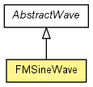

toxi.math.waves
Class FMSineWave
java.lang.Object
 toxi.math.waves.AbstractWave
toxi.math.waves.FMSineWave
toxi.math.waves.AbstractWave
toxi.math.waves.FMSineWave
public class FMSineWave
- extends AbstractWave

Frequency modulated sine wave. Uses a secondary wave to modulate the
frequency of the main wave.
Note: You must NEVER call the update() method on the
modulating wave.
|
Method Summary |
void |
pop()
|
void |
push()
|
void |
reset()
Resets this wave and its modulating wave as well. |
float |
update()
Progresses the wave and updates the result value. |
| Methods inherited from class java.lang.Object |
equals, getClass, hashCode, notify, notifyAll, wait, wait, wait |
fmod
public AbstractWave fmod
FMSineWave
public FMSineWave(float phase,
float freq,
AbstractWave fmod)
FMSineWave
public FMSineWave(float phase,
float freq,
float amp,
float offset)
FMSineWave
public FMSineWave(float phase,
float freq,
float amp,
float offset,
AbstractWave fmod)
pop
public void pop()
- Overrides:
pop in class AbstractWave
push
public void push()
- Overrides:
push in class AbstractWave
reset
public void reset()
- Resets this wave and its modulating wave as well.
- Overrides:
reset in class AbstractWave
- See Also:
AbstractWave.reset()
update
public float update()
- Progresses the wave and updates the result value. You must NEVER call the
update() method on the modulating wave since this is handled
automatically by this method.
- Specified by:
update in class AbstractWave
- Returns:
- current (newly calculated) wave value
- See Also:
AbstractWave.update()